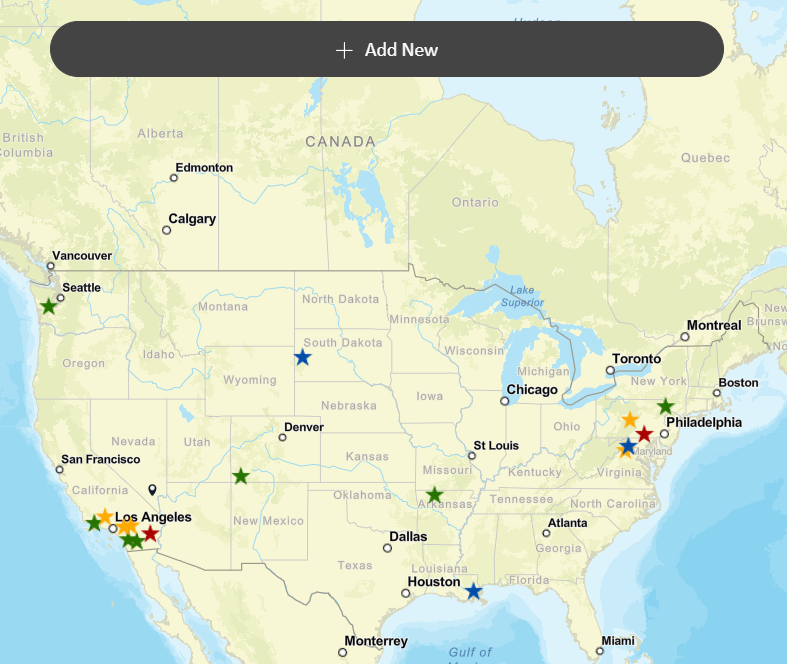

Project:
Women's Motorcycling Events
Introduction
The goal of the workflow is to create a project that visualizes multiple datasets via an embedded Experience Builder web application with an integrated Survey 123 application. Survey 123 allows users to submit data to the map that is featured in Experience Builder. I utilized this project to hone my skill with integrating interactive ESRI products such as Experience Builder and Survey 123.
Study Area
The area centers the contiguous United States however, I may choose to expand on this in the future as more data becomes available.
Data and Data Processing
The data was originally sourced through multiple locations on the web referenced below.
I utilized the event address details and copy/pasted them into Google My Maps. I exported
the layer as a KMZ and added the data to a new ArcGIS Pro project. I created the following fields:
- Name
- Event Type
- Start Date
- End Date
- Address
- City
- State
- Cost
- Website
- Details
- Event Image
I manually included this data for all of the created points. I utilized domains for the Event Type field for consistency and ease of use. I shared the map as a AGOL feature layer and made the layer public. I created a survey using Survey 123 the served to create additional points on a new layer. I included both layers in a Webmap and associated the map with a Web Experience. The experience was created to display a map of motorcycling events centering women, show a list with details, dates and locations and include a Survey 123 widget to collect additional data points from users.
Methods
I developed this application with the intention of allowing users more flexibiilty
to explore events. The challenges to this included similar challenges to any Volunteered
Geographic Information data sets. Becuase this data isn't already compiled, organized or
otherwise, much of the future data will be submitted by users. I chose to include domains which will
need to be further developed and refined as the application is used. I also made the decision to
incorporate the Survey 123 in a seperate layer. This is for two reasons;
- To allow users to vizualize their additions more easily.
- The survey results layer is symbolized using differnt symbology from the original layer which can allow the user to differentiate their additions from the orginal data. This will require maintenance from the administrator to move data points from the Results layer to the Original layer as they are assessed for quality and correctness.
- To maintain original data integrity.
- Administrators of the dataset will move the additional points create by users to the original layer. This serves to act as a quality control step ensuring a higher level of accuracy.
Results
The experience shows the map on the right and a list of events on the left slide out
The web page shows a map on the right. The list is sorted by date and filters to omit dates that are past. Each list item contains a title, Start Date, End Date, City, State and Website link. When selected the list item is highlight on the map (right) and zooms in to the related point. Users can opt to "add new event" by clicking a button at the top of the map. This button links to a popup window that contains a Survey 123 widget which will then display the new point on the map. This webpage works on Chrome and Mobile, however the formatting is much too small for mobile use and will have to be revised in the future.
References
https://www.motorcycleroads.com/motorcycle-events.
In Advancing Geographic Information Science: The Past and Next Twenty Years, 45–48.
Needham, MA: GSDI Association Press.
